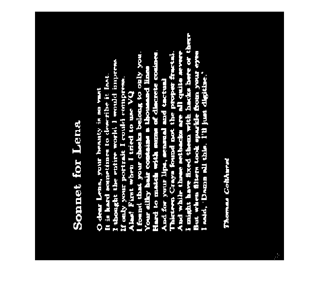

im = double(imread('son3.gif'));
im_1 = double(imread('son3rot1.gif'));
im_2 = double(imread('son3rot2.gif'));
im_3 = double(imread('son3rot3.gif'));
dft_o = fft2(im);
dft_o = fftshift(dft_o);
dft_1 = fft2(im_1);
dft_1 = fftshift(dft_1);
dft_2 = fft2(im_2);
dft_2 = fftshift(dft_2);
dft_3 = fft2(im_3);
dft_3 = fftshift(dft_3);
ln_o = mat2gray(abs(log(1 + dft_o)));
ln_1 = mat2gray(abs(log(1 + dft_1)));
ln_2 = mat2gray(abs(log(1 + dft_2)));
ln_3 = mat2gray(abs(log(1 + dft_3)));
bw_o = im2bw(ln_o, 0.80);
bw_1 = im2bw(ln_1, 0.80);
bw_2 = im2bw(ln_2, 0.80);
bw_3 = im2bw(ln_3, 0.80);
[r1 c1] = find(bw_1 == max(max(bw_1)));
[r2 c2] = find(bw_2 == max(max(bw_2)));
[r3 c3] = find(bw_3 == max(max(bw_3)));
size_1 = size(r1);
size_2 = size(r2);
size_3 = size(r3);
mean_1 = 0;
mean_2 = 0;
mean_3 = 0;
count_1 = 0;
count_2 = 0;
count_3 = 0;
figure, imshow(im)
for i=1:size_1
for j=1:size_1
if i ~= j && r1(i) ~= r1(j)
count_1 = count_1 + 1;
mean_1 = mean_1 + abs((c1(i) - c1(j))/(r1(i) - r1(j)));
end
end
end
figure, imshow(im_1)
mean_1 = mean_1/(count_1);
theta_1 = radtodeg(atan(mean_1))
for i=1:size_2
for j=1:size_2
if i~= j && r2(i) ~= r2(j)
count_2 = count_2 + 1;
mean_2 = mean_2 + abs((c2(i) - c2(j))/(r2(i) - r2(j)));
end
end
end
figure, imshow(im_2)
mean_2 = mean_2/(count_2);
theta_2 = radtodeg(atan(mean_2))
for i=1:size_3
for j=1:size_3
if i~=j && r3(i) ~= r3(j)
count_3 = count_3 + 1;
mean_3 = mean_3 + abs((c3(i) - c3(j))/(r3(i) - r3(j)));
end
end
end
figure, imshow(im_3)
mean_3 = mean_3/(count_3);
theta_3 = radtodeg(atan(mean_3))
theta_1 =
45.6084
theta_2 =
87.5086
theta_3 =
45.4211
